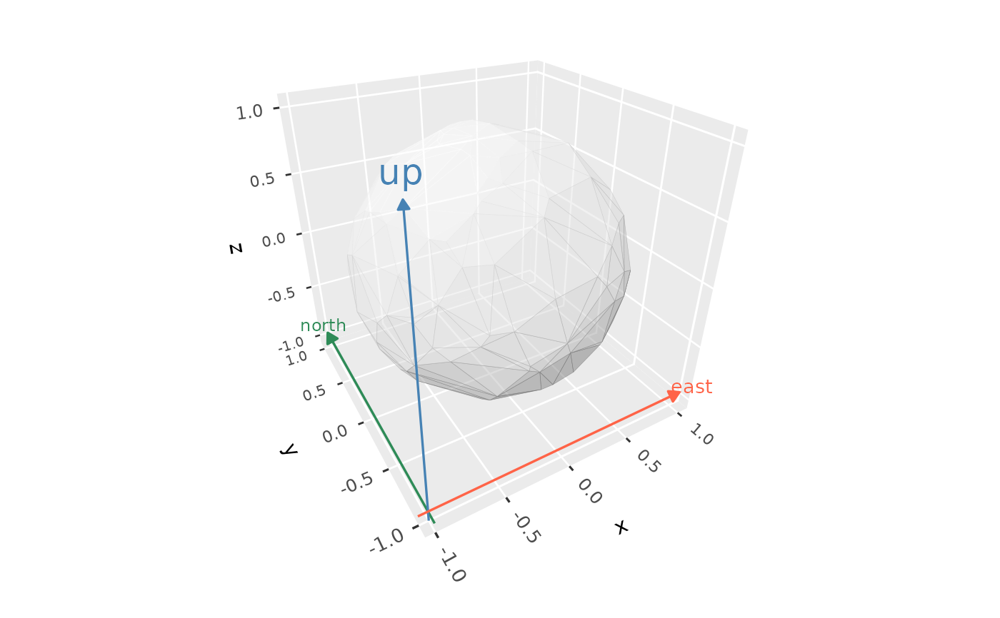

geom_axes_3d() draws a line along each of the x, y, and z axes through
an origin, each spanning the panel's full range along its axis, with an
arrowhead and a label at its high end. Unlike the axes drawn on the edges
of the panel by coord_3d(), these are part of the 3D scene, so they are
depth-sorted with the plot's other geometry. This suits diagrams, such as
plots of vectors, where the axes should pass through the origin.
Arguments
- x, y, z
Coordinates of the origin the axes pass through, each a single number. Default
0.- labels
Labels for the x, y, and z axes, drawn just beyond each axis's high end: a length-3 vector, with
NAor""to leave an axis unlabelled, orNULLfor no labels.- arrow
Arrowhead specification created by
grid::arrow(), orNULLfor none. The default is a closed 6pt arrowhead.- arrow.fill
Fill colour for closed arrowheads.
NULL(the default) uses each axis's colour.- ...
Aesthetics applied as fixed values:
colour,alpha, and, for the lines,linewidthandlinetype, and for the labels,size,family, andfontface. Each can have length 1, or length 3 to style the x, y, and z axes separately.- scale_depth
Controls depth-based scaling, drawing closer elements larger or thicker and farther ones smaller or thinner.
TRUE(the default) applies full scaling andFALSEdisables it; a number sets the strength directly, where1matchesTRUE,0matchesFALSE, values below 1 subdue the effect and values above 1 exaggerate it. This affects the layer only; usecoord_3d(scale_depth = )for panel and axis components.- on_top
If
TRUE, the layer is drawn on top of the rest of the scene instead of being depth-sorted with it, so other geometry never hides or cuts it, e.g. to keep labels legible. The layers drawn on top are depth-sorted among themselves. DefaultFALSE.
Details
Axes are built from the panel's limits when the plot is drawn, so they don't expand the plot's axis ranges. Positions are in the plot's (transformed) scale space.
Examples
# Axes through the origin, depth-sorted with a surface
ggplot() +
geom_function_3d(fun = function(x, y) (x^2 - y^2) / 2,
xlim = c(-1, 1), ylim = c(-1, 1), n = 20) +
geom_axes_3d(linewidth = 0.8) +
coord_3d(panels = "none") +
theme_void()
 # Styled per axis, with an offset origin
ggplot(sphere_points, aes(x, y, z)) +
geom_hull_3d(fill = "grey80", colour = "grey60", alpha = 0.5) +
geom_axes_3d(x = -1, y = -1, z = -1,
colour = c("tomato", "seagreen", "steelblue"),
labels = c("east", "north", "up")) +
coord_3d()
# Styled per axis, with an offset origin
ggplot(sphere_points, aes(x, y, z)) +
geom_hull_3d(fill = "grey80", colour = "grey60", alpha = 0.5) +
geom_axes_3d(x = -1, y = -1, z = -1,
colour = c("tomato", "seagreen", "steelblue"),
labels = c("east", "north", "up")) +
coord_3d()
